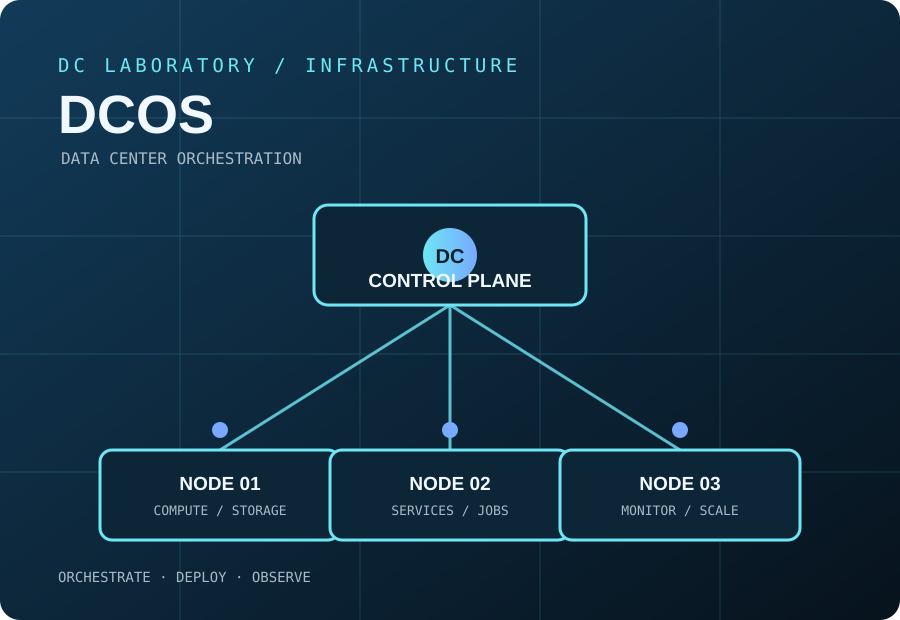

Orquestación
Coordina recursos de cómputo y servicios distribuidos para ejecutar cargas de trabajo sobre un clúster común.
INFRASTRUCTURE / ORCHESTRATION / DATA CENTER
Una referencia clara para explorar DC/OS: una plataforma orientada a orquestar recursos de centros de datos, desplegar servicios distribuidos y observar la operación desde un punto central.
Proyecto externo · Documentación oficial en dcos.io
MAPA DEL PRODUCTO
El repositorio oficial describe DC/OS como un sistema operativo para centros de datos. Esta tarjeta de DC Laboratory funciona como una página de referencia: resume el concepto para visitantes y dirige a la documentación original para instalación, compatibilidad, arquitectura y estado del proyecto.
Coordina recursos de cómputo y servicios distribuidos para ejecutar cargas de trabajo sobre un clúster común.
Centraliza la publicación y operación de servicios, reduciendo pasos repetitivos en infraestructuras de varios nodos.
Ofrece una vista operativa para seguir capacidad, servicios y estado general del entorno administrado.
NOTA DE CONTEXTO
DCos enlaza a un proyecto de infraestructura de gran alcance, no a una aplicación lista para instalar desde esta tarjeta. Antes de evaluar su uso, revisa la documentación oficial, los requisitos del clúster, las versiones disponibles y el mantenimiento del repositorio.